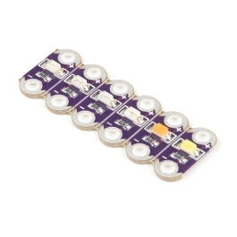

Mentor prep · Monday, November 16, 2026
Two working models.
Two pathways.
Jennifer builds a light-up wearable. Stephanie builds a responsive Hummingbird creature in the BirdBlox iPad app. Each guide names Stauffer-purchased supplies, includes identification photos and illustrations, and walks mentors through safe assembly and rehearsal.
Jennifer · Wearables · 18 individual students
Light-up felt patch and bucket hat

Demonstrate a battery-powered sewn LED circuit with conductive thread, a removable felt patch, a switched CR2032 holder, and decorated fabric.
Build check: verify LED electrical requirements, sew separate ± paths, test one LED, then attach and decorate.
Reference supply photo, not delivered inventory photo.Stephanie · Creative Robotics · 9 pairs
Hummingbird interactive creature

Program with the BirdBlox app on district iPads: a distance sensor detects a hand, an LED lights, and a servo moves a wing. The iPad may also play a recorded greeting.
Build check: locate kit, prepare BirdBrain Bluetooth firmware, connect by three-word device name, read sensor, run safe LED and servo routines.
BirdBrain manufacturer reference image.Programming stays unchanged across Limitless: Wearables may use MakeCode on a designated W micro:bit. Creative Robotics uses BirdBlox with a designated R micro:bit and the BirdBrain Bluetooth-ready firmware. Do not flash a MakeCode project onto an R board or tell students to use the standalone micro:bit app instead of BirdBlox.
Physical supply verification: Stauffer's receipt flags show sewable LEDs, coin cells, conductive thread, and GeeekPi micro:bits as received; the Hummingbird Premium Kits are still marked not received. Confirm actual storage-bin availability and prepare an unpowered robotics mock-up if a complete Hummingbird kit cannot be located.
Mentor handoff · before students arrive
Jennifer
One approved working sewn LED loop, removable hat patch, battery handled by an adult, labeled supply tray, front/back photos, and a short explanation of polarity and separate thread paths.
More: Circuit Lab mentor guide
Stephanie
One labeled BirdBlox Hummingbird rig (if physically available), installed iPad app, green Bluetooth connection, measured distance threshold, proven HOME and ACTIVE servo angles, blocks screenshot, and safe-reset script.
More: Existing BirdBlox mentor guide